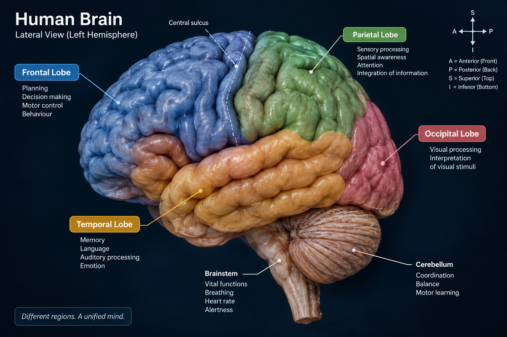
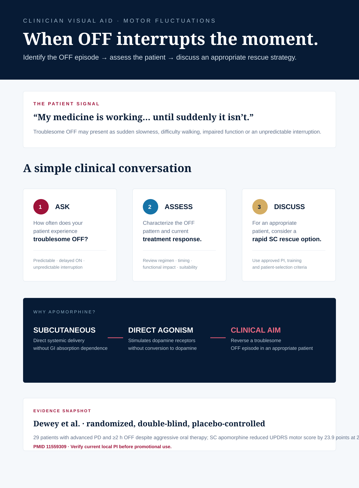

Because life doesn't wait for the next dose.
For patients living with troublesome OFF episodes, the clinical question is not only how to control Parkinson's overall — but how to respond when OFF happens.
A day can change in minutes.
Use this timeline first. It makes the clinical problem visible before the molecule is introduced.
Medication effect is adequate. He can start the day.
Bradykinesia returns. Getting moving takes effort.
Movement improves again as dopaminergic therapy takes effect.
The next OFF arrives before he wants it to.
The goal is not a perfect day — it is fewer moments lost to OFF.
OFF is a functional problem.
Keep the explanation clinically useful: identify what changes for the patient and what the clinician is trying to solve.
Wearing OFF
Motor benefit becomes shorter or less predictable as the dosing interval progresses.
Delayed / inadequate ON
The patient may experience a gap between taking therapy and regaining useful motor function.
Unpredictable OFF
An OFF episode can interrupt walking, speaking, self-care or a planned activity.
The unmet need is moment-specific control.
That reframes the product conversation from “another Parkinson's medicine” to a targeted rescue strategy for selected patients.
Why dopamine loss changes movement.
One visual. One clinical takeaway. Avoid overloading the neurologist with a textbook pathway.
Reduced nigrostriatal dopamine shifts basal-ganglia output toward movement inhibition.
Loss of dopaminergic input from the substantia nigra pars compacta reduces facilitation of the direct pathway and increases the relative influence of the indirect pathway.

Each therapy has a role — and a different job.
Present the landscape without ranking therapies. The point is to identify where a rapid rescue option fits.
A direct dopaminergic route to the OFF moment.
Explain the molecule in one clean chain — then introduce APOSAN® as the delivery proposition.
Subcutaneous delivery
Rapid systemic delivery avoids dependence on gastrointestinal absorption.
Dopamine receptor agonism
Apomorphine directly stimulates dopamine receptors rather than requiring conversion to dopamine.
Motor response
In appropriate patients, the intended clinical outcome is reversal of an OFF episode.
From clinical need to practical delivery.
Rusan's public information describes APOSAN® (apomorphine injection) for motor fluctuations / ON-OFF phenomena not sufficiently controlled by oral anti-Parkinson medications. The public product page lists 10 mg/mL presentations and an onset claim of 4–10 minutes.
verify local PI before use
Don't make the LBL a wall of text.
Show one clinical question, one pivotal result, then translate it into a physician conversation.
{kind=link}
One page the field team can actually use.
Move from mechanism to patient identification to action. Keep the conversation clinician-first.

{kind=link}
Build the brand in three disciplined moves.
No clutter. Each phase has one strategic job, field actions and measurable outputs.
Make OFF visible.
Build neurologist recognition of troublesome OFF patterns and define the appropriate-patient conversation.
- Segment priority movement-disorder accounts
- Train field force on OFF recognition + objection handling
- Launch OFF-focused VA / LBL / case discussion
Make rescue practical.
Convert scientific awareness into confidence around patient selection, device initiation and follow-up.
- Small-group KOL case workshops
- Pen demonstration + initiation support workflow
- Capture field objections and close evidence gaps
Build scientific recall.
Turn early learning into a repeatable brand system without losing clinical discipline.
- Real-world insight synthesis
- Refine account plans by patient archetype
- Refresh evidence communication and rep certification
Built for a scientific conversation.
1. Rusan Pharma. APOSAN® public product information. urlRusan APOSAN pageturn0search0
2. Dewey RB Jr et al. A randomized, double-blind, placebo-controlled trial of subcutaneously injected apomorphine for parkinsonian off-state events. Arch Neurol. 2001;58:1385–1392. PMID 11559309. urlPubMedturn0search1
3. Katzenschlager R et al. TOLEDO: apomorphine subcutaneous infusion in persistent motor fluctuations. Lancet Neurol. 2018. PMID 30055903. urlPubMedturn0search5